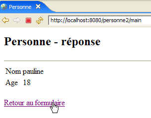
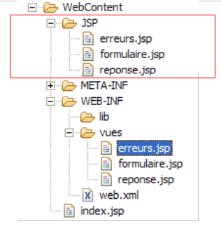

6. Webapplicatie MVC [personne] – versie 2
We gaan nu varianten aanbieden van de vorige applicatie [/personne1], die we [/personne2, /personne3, ...] zullen noemen. Deze varianten wijzigen de oorspronkelijke architectuur van de applicatie niet; deze blijft als volgt:

Voor deze varianten zullen we onze uitleg beknopter houden. We zullen alleen de wijzigingen ten opzichte van de vorige versie toelichten.
6.1. Introduction
We zijn nu van plan om sessiebeheer aan onze applicatie toe te voegen. Laten we de volgende punten nog eens op een rijtje zetten:
- de client-serverdialoog HTTP bestaat uit een reeks onderling losstaande vraag-antwoordsequenties
- de sessie fungeert als geheugen tussen verschillende vraag-antwoordsequenties van dezelfde gebruiker. Als er N gebruikers zijn, zijn er N sessies.
De volgende schermreeks laat zien wat er nu gewenst is in de werking van de applicatie:
Uitwisseling nr. 1
 |  |
De nieuwigheid betreft de terugkeerlink naar het formulier die is toegevoegd in de weergave [erreurs].
Uitwisseling nr. 2
 |  |
In uitwisseling nr. 1 heeft de gebruiker voor het paar (naam, leeftijd) de waarden (xx, yy) opgegeven. Als de server tijdens de uitwisseling kennis heeft genomen van deze waarden, 'vergeet' hij ze aan het einde van de uitwisseling. Toch valt op dat de server tijdens uitwisseling nr. 2 in staat is om deze waarden opnieuw in zijn antwoord weer te geven. Het is het concept van de sessie dat de webserver hier in staat stelt om gegevens op te slaan tijdens opeenvolgende client-server-uitwisselingen. Er zijn andere mogelijke oplossingen om dit probleem op te lossen.
Tijdens uitwisseling nr. 1 slaat de server het paar (naam, leeftijd) dat de client hem heeft gestuurd op in de sessie, zodat hij dit tijdens uitwisseling nr. 2 kan weergeven.
Hier volgt nog een voorbeeld van de toepassing van de sessie tussen twee uitwisselingen:
Uitwisseling nr. 1
 |  |
Nieuw is de teruglink naar het formulier die aan de antwoordpagina is toegevoegd.
Uitwisseling nr. 2
 |  |
6.2. Het Eclipse-project
Om het Eclipse-project [mvc-personne-02] van de webapplicatie [/personne2] aan te maken, gaan we het Eclipse-project [mvc-personne-01] dupliceren om de bestaande gegevens over te nemen. Ga hiervoor als volgt te werk:
[clic droit sur projet mvc-personne-01 -> Copy]:

en vervolgens [clic droit dans Package Explorer -> Paste]:
 |  - laten we in [1] de naam van het nieuwe project aangeven en in [2] de naam van een bestaande maar lege map |
Het project [mvc-personne-02] wordt vervolgens aangemaakt:

Het is voorlopig identiek aan het project [mvc-personne-01]. We zullen handmatig enkele wijzigingen moeten aanbrengen voordat we het kunnen gebruiken. Laten we naar de weergave [Servers] gaan en proberen deze nieuwe applicatie toe te voegen aan de applicaties die door Tomcat worden beheerd:
 |  |
We zien dat in [1] het nieuwe project [mvc-personne-02] niet door Tomcat wordt herkend. Om ervoor te zorgen dat Tomcat het wel herkent, moet een configuratiebestand van het project [mvc-personne-02] worden aangepast. Laten we de optie [File / Open File] gebruiken om het bestand [<mvc-personne-02>/.settings/.component] te openen:
<?xml version="1.0" encoding="UTF-8"?>
<project-modules id="moduleCoreId">
<wb-module deploy-name="mvc-personne-01">
<wb-resource deploy-path="/" source-path="/WebContent"/>
<wb-resource deploy-path="/WEB-INF/classes" source-path="/src"/>
<property name="java-output-path" value="/build/classes/"/>
<property name="context-root" value="personne1"/>
</wb-module>
</project-modules>
Regel 3 geeft de naam aan van de webmodule die in Tomcat moet worden geïmplementeerd. Deze naam is hier dezelfde als die van het project [mvc-personne-01]. We veranderen deze in [mvc-personne-02]:
<wb-module deploy-name="mvc-personne-02">
Bovendien kunnen we van de gelegenheid gebruikmaken om op regel 7 de naam van de applicatiecontext [mvc-personne-02] aan te passen, aangezien deze in conflict is met die van het project [mvc-personne-01]:
<property name="context-root" value="personne2"/>
Deze tweede wijziging kon rechtstreeks in Eclipse worden doorgevoerd. Ik heb echter niet gezien hoe de eerste wijziging kon worden doorgevoerd zonder het configuratiebestand te gebruiken.
Zodra dit is gebeurd, slaan we het nieuwe bestand [.content] op, sluiten we Eclipse af en starten we het opnieuw op, zodat de wijzigingen worden doorgevoerd.
Laten we, zodra Eclipse opnieuw is opgestart, de bewerking proberen uit te voeren die eerder mislukte:
|  |
Deze keer wordt het project [mvc-personne-02] wel herkend. We voegen het toe aan de projecten die zijn geconfigureerd om door Tomcat te worden uitgevoerd:

6.3. Configuratie van de webapplicatie [personne2]
Het bestand web.xml van de applicatie /personne2 ziet er als volgt uit:
<?xml version="1.0" encoding="UTF-8"?>
<web-app id="WebApp_ID" version="2.4"
xmlns="http://java.sun.com/xml/ns/j2ee"
xmlns:xsi="http://www.w3.org/2001/XMLSchema-instance"
xsi:schemaLocation="http://java.sun.com/xml/ns/j2ee http://java.sun.com/xml/ns/j2ee/web-app_2_4.xsd">
<display-name>mvc-personne-02</display-name>
<!-- ServletPersonne -->
<servlet>
<servlet-name>personne</servlet-name>
<servlet-class>
istia.st.servlets.personne.ServletPersonne
</servlet-class>
<init-param>
<param-name>urlReponse</param-name>
<param-value>
/WEB-INF/vues/reponse.jsp
</param-value>
</init-param>
<init-param>
<param-name>urlErreurs</param-name>
<param-value>
/WEB-INF/vues/erreurs.jsp
</param-value>
</init-param>
<init-param>
<param-name>urlFormulaire</param-name>
<param-value>
/WEB-INF/vues/formulaire.jsp
</param-value>
</init-param>
<init-param>
<param-name>urlControleur</param-name>
<param-value>
main
</param-value>
</init-param>
<init-param>
<param-name>lienRetourFormulaire</param-name>
<param-value>
Retour au formulaire
</param-value>
</init-param>
</servlet>
<!-- Toewijzing ServletPersonne-->
<servlet-mapping>
<servlet-name>personne</servlet-name>
<url-pattern>/main</url-pattern>
</servlet-mapping>
<!-- startbestanden -->
<welcome-file-list>
<welcome-file>index.jsp</welcome-file>
</welcome-file-list>
</web-app>
Dit bestand is identiek aan dat van de vorige versie, behalve dat er twee nieuwe initialisatieparameters zijn toegevoegd:
- regel 6: de weergavenaam van de webapplicatie is gewijzigd in [mvc-personne-02]
- regels 31-36: definiëren de configuratieparameter met de naam [urlControleur], wat de URL [main] is die naar de servlet [ServletPersonne] leidt
- regels 37-42: definiëren een configuratieparameter met de naam [lienRetourFormulaire], wat de tekst is van de teruglink naar het formulier op de pagina’s JSP, [erreurs.jsp] en [reponse.jsp].
De startpagina [index.jsp] verandert:
<%@ page language="java" contentType="text/html; charset=ISO-8859-1"
pageEncoding="ISO-8859-1"%>
<!DOCTYPE HTML PUBLIC "-//W3C//DTD HTML 4.01 Transitional//EN">
<%
response.sendRedirect("/personne2/main");
%>
- regel 5: de pagina [index.jsp] leidt de client om naar de URL van de controller [ServletPersonne] van de applicatie [/personne2].
6.4. De code van de weergaven
6.4.1. De weergave [formulaire]
Deze weergave is identiek aan die van de vorige versie:

Deze wordt gegenereerd door de volgende pagina JSP [formulaire.jsp]:
<%@ page language="java" contentType="text/html; charset=ISO-8859-1"
pageEncoding="ISO-8859-1"%>
<!DOCTYPE HTML PUBLIC "-//W3C//DTD HTML 4.01 Transitional//EN">
<%
// de gegevens van het sjabloon worden opgehaald
String nom=(String)session.getAttribute("nom");
String age=(String)session.getAttribute("age");
String urlAction=(String)request.getAttribute("urlAction");
%>
<html>
<head>
<title>Personne - formulaire</title>
</head>
<body>
<center>
<h2>Personne - formulaire</h2>
<hr>
<form action="<%=urlAction%>" method="post">
<table>
<tr>
<td>Nom</td>
<td><input name="txtNom" value="<%= nom %>" type="text" size="20"></td>
</tr>
<tr>
<td>Age</td>
<td><input name="txtAge" value="<%= age %>" type="text" size="3"></td>
</tr>
<tr>
</table>
<table>
<tr>
<td><input type="submit" value="Envoyer"></td>
<td><input type="reset" value="Rétablir"></td>
<td><input type="button" value="Effacer"></td>
</tr>
</table>
<input type="hidden" name="action" value="validationFormulaire">
</form>
</center>
</body>
</html>
De nieuwigheden:
- regel 19: het formulier heeft nu een attribuut [action] waarvan de waarde de URL is waarnaar de browser de formulierwaarden moet verzenden wanneer de gebruiker op de knop [Envoyer] van het type submit klikt. De variabele [urlAction] krijgt de waarde action="main". De weergave [formulaire] wordt weergegeven na de volgende acties van de gebruiker:
- eerste verzoek: GET /persoon2/main
- klik op de link [Retour au formulaire]: GET /persoon2/main?action=retourFormulaire
Aangezien het attribuut [action] geen absolute URL (beginnend met /) maar een relatieve URL (niet beginnend met /) specificeert, zal de browser het eerste deel van de URL van de momenteel weergegeven pagina [/personne2] gebruiken en daar de relatieve URL aan toevoegen. De URL van POST wordt dus [/personne2/main], die van de controller. Dit verzoek POST gaat vergezeld van de parameters [txtNom, txtAge, action] uit de regels 23, 27 en 38.
- regel 8: de waarde van het element [urlAction] uit het model wordt opgehaald. Deze wordt gezocht in de attributen van de huidige aanvraag. Deze waarde wordt gebruikt in regel 19.
- regels 6-7: de waarden van de elementen [nom, age] uit het model worden opgehaald. Deze worden gezocht in de attributen van de sessie en niet langer in die van de query, zoals in de vorige versie. Dit om te voldoen aan de vereisten van de query [GET /personne2/main?action=retourFormulaire] van de koppeling naar de weergaven [réponse] en [erreurs]. Voordat deze twee weergaven worden weergegeven, plaatst de controller de in het formulier ingevoerde gegevens in de sessie, waardoor hij deze kan terugvinden wanneer de gebruiker de koppeling [Retour au formulaire] van de weergaven [réponse] en [erreurs] gebruikt.
6.4.2. De weergave [reponse]
Deze weergave toont de in het formulier ingevoerde waarden wanneer deze geldig zijn:
 | |
Ten opzichte van de vorige versie is de koppeling [Retour au formulaire] nieuw. De weergave wordt gegenereerd door de volgende pagina: JSP [reponse.jsp]:
<%@ page language="java" contentType="text/html; charset=ISO-8859-1"
pageEncoding="ISO-8859-1"%>
<!DOCTYPE HTML PUBLIC "-//W3C//DTD HTML 4.01 Transitional//EN">
<%
// de gegevens van het model worden opgehaald
String nom=(String)request.getAttribute("nom");
String age=(String)request.getAttribute("age");
String lienRetourFormulaire=(String)request.getAttribute("lienRetourFormulaire");
%>
<html>
<head>
<title>Personne</title>
</head>
<body>
<h2>Personne - réponse</h2>
<hr>
<table>
<tr>
<td>Nom</td>
<td><%= nom %>
</tr>
<tr>
<td>Age</td>
<td><%= age %>
</tr>
</table>
<br>
<a href="?action=retourFormulaire"><%= lienRetourFormulaire %></a>
</body>
</html>
- regel 31: de link terug naar het formulier. Deze link bestaat uit twee onderdelen:
- het doel [href="?action=retourFormulaire"]. De weergave [réponse] wordt weergegeven na de POST van het formulier [formulaire.jsp] op de URL [/personne2/main]. Het is dus deze laatste URL die in de browser wordt weergegeven wanneer de weergave [réponse] wordt weergegeven. Een klik op de link [Retour au formulaire] leidt dan tot een GET-verzoek van de browser naar de URL die is opgegeven door het attribuut [href] van de link, in dit geval "?action=retourFormulaire". Als er geen URL is opgegeven in [href], gebruikt de browser de URL van de momenteel weergegeven weergave, c.a.d. [/personne2/main]. Uiteindelijk zal het klikken op de link [Retour au formulaire] een GET-verzoek van de browser naar de URL [/personne2/main?action=retourFormulaire] veroorzaken, c.a.d, de URL van de controller van de applicatie, vergezeld van de parameter [action] om aan te geven wat deze moet doen.
- de tekst van de link. Deze maakt deel uit van het sjabloon dat door de controller naar de pagina wordt verzonden en in regel 10 wordt opgehaald.
6.4.3. De weergave [erreurs]
Deze weergave meldt invoerfouten in het formulier:
| |
Ten opzichte van de vorige versie is de koppeling [Retour au formulaire] nieuw. De weergave wordt gegenereerd door de volgende pagina JSP [erreurs.jsp]:
<%@ page language="java" contentType="text/html; charset=ISO-8859-1"
pageEncoding="ISO-8859-1"%>
<!DOCTYPE HTML PUBLIC "-//W3C//DTD HTML 4.01 Transitional//EN">
<%@ page import="java.util.ArrayList" %>
<%
// de gegevens van het model worden opgehaald
ArrayList erreurs=(ArrayList)request.getAttribute("erreurs");
String lienRetourFormulaire=(String)request.getAttribute("lienRetourFormulaire");
%>
<html>
<head>
<title>Personne</title>
</head>
<body>
<h2>Les erreurs suivantes se sont produites</h2>
<ul>
<%
for(int i=0;i<erreurs.size();i++){
out.println("<li>" + (String) erreurs.get(i) + "</li>\n");
}//for
%>
</ul>
<br>
<a href="?action=retourFormulaire"><%= lienRetourFormulaire %></a>
</body>
</html>
- regel 26: de link om terug te keren naar het formulier. Deze link is identiek aan die van de weergave [réponse]. De lezer wordt verzocht om eventueel de uitleg bij deze weergave nog eens door te lezen.
6.5. Testen van de weergaven
Om de voorgaande weergaven te testen, dupliceren we hun pagina’s JSP in de map /WebContent/JSP van het Eclipse-project:

Vervolgens worden in de map JSP de pagina’s als volgt aangepast:
[formulaire.jsp]:
...
<%
// -- test: de paginasjabloon wordt aangemaakt
session.setAttribute("nom","tintin");
session.setAttribute("age","30");
request.setAttribute("urlAction","main");
%>
<%
// de gegevens van het sjabloon worden opgehaald
String nom=(String)session.getAttribute("nom");
String age=(String)session.getAttribute("age");
String urlAction=(String)request.getAttribute("urlAction");
%>
De regels 4-5 zijn toegevoegd om het sjabloon te maken dat de pagina op regels 11-13 nodig heeft.
[reponse.jsp]:
<%
// -- test: we maken de paginasjabloon aan
request.setAttribute("nom","milou");
request.setAttribute("age","10");
request.setAttribute("lienRetourFormulaire","Retour au formulaire");
%>
<%
// de gegevens van het sjabloon worden opgehaald
String nom=(String)request.getAttribute("nom");
String age=(String)request.getAttribute("age");
String lienRetourFormulaire=(String)request.getAttribute("lienRetourFormulaire");
%>
De regels 4-6 zijn toegevoegd om het sjabloon te maken dat nodig is voor de pagina in de regels 11-13.
[erreurs.jsp]:
<%
// -- test: het paginasjabloon wordt aangemaakt
ArrayList<String> erreurs1=new ArrayList<String>();
erreurs1.add("erreur1");
erreurs1.add("erreur2");
request.setAttribute("erreurs",erreurs1);
request.setAttribute("lienRetourFormulaire","Retour au formulaire");
%>
<%
// de gegevens van het sjabloon worden opgehaald
ArrayList erreurs=(ArrayList)request.getAttribute("erreurs");
String lienRetourFormulaire=(String)request.getAttribute("lienRetourFormulaire");
%>
De regels 4-8 zijn toegevoegd om het sjabloon te maken dat de pagina in de regels 13-14 nodig heeft.
Start Tomcat op als dat nog niet is gebeurd en roep vervolgens de volgende URL's op:
 |  |
 |
We krijgen inderdaad de verwachte weergaven te zien.
6.6. De controller [ServletPersonne]
De controller [ServletPersonne] van de webapplicatie [/personne2] zal de volgende acties verwerken:
nr. | verzoek | bron | verwerking |
1 | [GET /personne2/main] | door de gebruiker ingevoerde URL | - de lege weergave [formulaire] verzenden |
2 | [POST /personne2/main] met parameters [txtNom, txtAge, actie] verzonden | klik op de knop [Envoyer] in de weergave [formulaire] | - de waarden van de parameters controleren [txtNom, txtAge] - als ze onjuist zijn, de weergave [erreurs(erreurs)] verzenden - als ze correct zijn, stuur dan de weergave [reponse(nom,age)] |
3 | [GET /persoon2/main? action=terugNaarFormulier] | klik op de link [Terug naar formulier] van de weergaven antwoord] en [erreurs]. | - de weergave [formulaire] vooraf ingevuld met de laatst ingevoerde waarden verzenden |
We hebben dus een nieuwe actie die moet worden verwerkt: [GET /personne2/main?action=retourFormulaire].
6.6.1. Skelet van de controller
Het skelet van de controller [ServletPersonne] is vrijwel identiek aan dat van de vorige versie:
De nieuwigheden:
- regel 4: door het gebruik van een sessie moet het pakket [HttpSession] worden geïmporteerd
- regels 28-30: de nieuwe methode [doRetourFormulaire] verwerkt de nieuwe actie: [GET /personne2/main?action=retourFormulaire].
6.6.2. Initialisatie van de controller [init]
De methode [init] is identiek aan die van de vorige versie. Deze controleert of de elementen die in de tabel [paramètres] zijn gedeclareerd, aanwezig zijn in het bestand [web.xml]:
- regel 5: de parameters [urlControleur] (URL van de controller) en [lienRetourFormulaire] (tekst van de link van de weergaven [réponse] en [erreurs]) zijn toegevoegd.
6.6.3. De methode [doGet]
De methode [doGet] moet de actie [GET /personne2/main?action=retourFormulaire] verwerken, die voorheen niet bestond:
- regels 6-14: er wordt gecontroleerd of de lijst met initialisatiefouten leeg is. Als dat niet het geval is, wordt de weergave [erreurs(erreursInitialisation)] weergegeven, die de fout(en) meldt.
Om deze code te begrijpen, moet men het model van de weergave [erreurs] in gedachten houden:
<%
// gegevens uit het sjabloon ophalen
ArrayList erreurs=(ArrayList)request.getAttribute("erreurs");
String lienRetourFormulaire=(String)request.getAttribute("lienRetourFormulaire");
%>
De weergave [erreurs] verwacht een sleutelelement "fouten" in de aanvraag. De controller maakt dit element aan op regel 8. Ze verwacht ook een sleutelelement "lienRetourFormulaire". De controller maakt dit element aan op regel 9. Hier zal de tekst van de link leeg zijn. Er zal dus geen link staan in de verzonden weergave [erreurs]. Als er namelijk fouten zijn opgetreden bij het opstarten van de applicatie, moet deze opnieuw worden geconfigureerd. Het heeft geen zin om de gebruiker via een link aan te bieden de applicatie voort te zetten.
- regels 34-37: verwerking van de nieuwe actie [GET /personne2/main?action=retourFormulaire]
6.6.4. De methode [doInit]
Deze methode verwerkt verzoek nr. 1 [GET /personne2/main]. Voor dit verzoek moet de lege weergave [formulaire(nom,age)] worden verzonden. De code is als volgt:
- regel 4: de huidige sessie wordt opgehaald indien deze bestaat, anders wordt deze aangemaakt (parameter true van getSession).
- regels 9-10: de weergave [formulaire] wordt weergegeven. Ter herinnering: dit is het model dat door deze weergave wordt verwacht:
<%
// de gegevens uit het model ophalen
String nom=(String)session.getAttribute("nom");
String age=(String)session.getAttribute("age");
String urlAction=(String)request.getAttribute("urlAction");
%>
- regels 6-7: de elementen [nom,age] van het model van de weergave [formulaire] worden geïnitialiseerd met lege tekenreeksen en in de sessie geplaatst, omdat de weergave ze daar verwacht.
- regel 8: het element [urlAction] van het model wordt geïnitialiseerd met de waarde van de parameter [urlControleur] uit het bestand [web.xml] en in de query geplaatst.
6.6.5. De methode [doValidationFormulaire]
Deze methode verwerkt verzoek nr. 2 [POST /personne2/main], waarin de verzonden parameters [action, txtNom, txtAge] zijn. De code ervan is als volgt:
- regels 5-6: de waarden van de parameters „txtNom” en „txtAge” worden uit het verzoek van de klant opgehaald.
- regels 8-10: deze waarden worden in de sessie opgeslagen, zodat ze kunnen worden opgehaald wanneer de gebruiker op de link [Retour au formulaire] klikt vanuit de weergaven [réponse] en [erreurs].
- regels 12-19: de geldigheid van de waarden van beide parameters wordt gecontroleerd
- regels 21-28: als een van de parameters onjuist is, wordt de weergave [erreurs(erreurs,lienRetourFormulaire)] weergegeven. Ter herinnering: het model van deze weergave is:
<%
// de gegevens uit het model worden opgehaald
ArrayList erreurs=(ArrayList)request.getAttribute("erreurs");
String lienRetourFormulaire=(String)request.getAttribute("lienRetourFormulaire");
%>
- regels 30-34: als de twee opgehaalde parameters "txtNom" en "txtAge" geldige waarden hebben, wordt de weergave [reponse(nom,age,lienRetourFormulaire)] weergegeven. Houd het sjabloon van de weergave [reponse] in gedachten:
<%
// de gegevens uit het model worden opgehaald
String nom=(String)request.getAttribute("nom");
String age=(String)request.getAttribute("age");
String lienRetourFormulaire=(String)request.getAttribute("lienRetourFormulaire");
%>
6.6.6. De methode [doRetourFormulaire]
Deze methode verwerkt verzoek nr. 3 [GET /personne2/main?action=retourFormulaire]. De code ervan is als volgt:
Na afloop van deze methode moet de weergave [formulaire] worden weergegeven, vooraf ingevuld met de laatste invoer van de gebruiker. Ter herinnering: het model van de weergave [formulaire]:
<%
// de gegevens uit het model ophalen
String nom=(String)session.getAttribute("nom");
String age=(String)session.getAttribute("age");
String urlAction=(String)request.getAttribute("urlAction");
%>
De methode [doRetourFormulaire] moet dus het bovenstaande model opbouwen.
- regel 4: we halen de sessie op waarin de controller de ingevoerde waarden (naam, leeftijd) heeft opgeslagen.
- regel 7: de naam wordt uit de sessie opgehaald
- regels 8-9: als deze er niet in staat, wordt deze er met een lege waarde in geplaatst. Dit geval zou zich bij normaal gebruik van de applicatie niet moeten voordoen, aangezien de actie [retourFormulaire] altijd plaatsvindt na de actie [validationFormulaire], dus nadat de ingevoerde gegevens in de sessie zijn opgeslagen. Maar een sessie kan verlopen omdat deze een beperkte levensduur heeft, vaak enkele tientallen minuten. In dat geval heeft regel 4 een nieuwe sessie aangemaakt waarin de naam niet te vinden is. We voegen dan een lege naam toe aan de nieuwe sessie.
- regels 11-13: hetzelfde geldt voor de leeftijd
- als we het probleem van de verlopen sessie negeren, dan zijn de regels 3-13 overbodig. De elementen [nom,age] van het model bevinden zich al in de sessie. Ze hoeven er dus niet opnieuw in te worden geplaatst.
- regel 15: we stellen de waarde van het element [urlAction] van het model vast
6.7. Tests
Start Tomcat of start het opnieuw op. Roep de URL [http://localhost:8080/personne2] op en herhaal vervolgens de tests die als voorbeeld worden getoond in paragraaf 6.1.